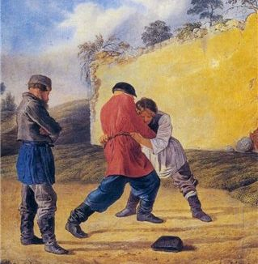

Кулачные традиции заволжья

В Заволжье, на территории бывшего Дикого поля существовало два вида ударной борьбы: кулачные бои и вольные поединки ярмарочных бойцов. Ярмарочных бойцов одновременно насчитывалось не более двух-трех сотен, а вот на кулачные бои ходило почти все мужское население деревень кондовых "русаков".
Кулачные бои - одна из тех основополагающих традиций, которые сформировали характер, дух народа. Влияние кулачных боев на характер русского народа многогранно. Решительность и стойкость и вместе с тем излишнее ухарство и грубоватость манер, стремление к чрезмерному риску и благородное соблюдение неписанных правил - вот лишь часть того наследия, что оставили кулачные бои. В бойцах с детства воспитывался патриотизм своей улицы, своей деревни, своего народа. Из них получались лучшие солдаты в мире. Древние летописцы еще в четвертом веке упоминали о кулачных боях у славянских племен. Наши предки тогда добывали пропитание двумя основными способами - звероловством и землепашеством. Переходный период от полукочевого звероловства к оседлому землепашеству. Большинство мужчин еще много веков одновременно сочетали оба занятия. Они и заложили основу техники и ритуалов кулачных боев.
Традицию кулачных боев не прервали ни татаро-монгольское нашествие, ни польско-литовское, ни жестокие указы Ивана Грозного, ни периодически повторяющиеся безурожайные голодные годы, ни проповеди иных религиозных деятелей. Прошла лихая година, и опять народ живет по старым обычаям.
После кровавой первой мировой войны и последовавшей не менее кровавой гражданской, число кулачных боев повсеместно сократилось. Но на Масленницу по всей России от Балтики до Камчатки сельские мужики выходили позабавиться, померяться силой. Кулачные бои закончились 22 июня 1941 года. Началась такая страшная война, что прервалась связь времен и поколений. На фронтовых полях остались миллионы мужчин. От некоторых "призывных годов" домой вернулись только ТРИ процента, и те калеки. Это при поголовной мобилизации, особенно в сельской местности.
Простодушные русские кулачные бои выиграли самую кровавую войну, отстояли Родину и полегли. Нехватку оружия и командирские просчеты компенсировали их беспримерной решительностью и выносливостью. Ушел народ, воспитанный на кулачных боях. Был и нету. Интриги политиков приводят к жутким потрясениям для народа.
Ныне еще живут немногие старики, ходившие на кулачики до войны. Одну из древнейших традиций великоросских они считают делом обыденным, привычным, а между тем одна из любопытнейших граней национальной культуры их детям и внукам практически не известна. После войны кулачных боев нигде не проводилось.
Своеобразное развитие русские спортивные традиции получили в Диком поле. Триста-четыреста лет назад в заволжские лесостепи пришли звероловы-промышленники и повольники-бунтари, рыбаки и табунщики, вслед за ними первые вольные и беглые хлебопашцы. Народ особого сплава. Было у них три важнейших ремесла-забавы: охота, скачки и кулачные бои.
Об охоте и состязаниях в стрельбе отдельный рассказ не нужен. Ибо в Центральной России к тому времени звероловов-промышленников почти не осталось, а здесь от лесных регионов многое отличалось.
Скачки проводились на 40, 50, 60 верст. В одну сторону 20-30 верст и обратно. Будто на одном дыхании пролетали. Зрители сидели на холме или древнем кургане, а по степи лихо мчались два-три десятка лучших наездников. Состязание всадников и демонстрация разномастных и разнородных скакунов. В числе победителей-наездников нередко были подростки. Часто происходило это во время ярмарок.
Лучшими конями считали тех, что выросли на тебеневке (на подножном корму и летом и зимой). Но самые лихие наездники использовали диких тарпанов. Эта порода лошадей не поддавалась приручению. Запряженными в телегу их не видели. А вот верховые встречались. Табунщики ловили тарпанов в степи арканом и около двух месяцев водили на поводке за обычной верховой лошадью. Только после этого тарпана можно использовать для верховой езды, да и то с большим риском. Невысокая лошадка с черной полосой вдоль спины и черной стоячей гривой уступала в силе битюгам, но в резвости выносливости не знала равных.
А вокруг в степи и особенно в долах травы в пояс и выше, густые сосновые боры и дубравы. И никаких дорог, проводов и труб... Приволье. Зато на горизонте среди стад сайгаков и тарпанов в любой момент мог появиться отряд воинственных кочевников...
Это отступление сделано для того, чтобы современники смогли хоть чуточку почувствовать атмосферу эпохи, когда еще культивировались древние и зарождались новые традиции ярмарочного боя. Со временем исчезли тарпаны, распахали степи и не стало былого приволья. Ушли в прошлое первобытные скачки. От времен тех осталось название речки Тарпановка.
Более долгой оказалась традиция ходить "стенка на стенку". В Заволжье помимо кулачного боя существовал еще и местный вид, который мы назвали вольный бой ярмарочных бойцов. Но наибольшее распространение имел традиционный кулачный бой. На кулачные бои ходили летом, поздней осенью, когда сырую землю скует первый мороз, и зимой. Ходили по праздникам и по воскресеньям. Только весной наблюдалось затишье. Продолжительная распутица и подготовка к севу не оставляли места для забав.
Обычный кулачный боец специальных тренировок в зрелые годы не проводил, но боевой опыт имел весьма значительный. По моим подсчетам, боец за год был участником от пяти до тридцати боев, в зависимости от возраста и темперамента. Многие из них уже в 16-18 лет бились в одной стенке со взрослыми. Если прибавить мальчишеские схватки, любому видно, что за спиной сельского кулачного бойца к сорока годам сотни боев с использованием голого кулака. Такого на мякине не проведешь, глоткой и нахрапом не возьмешь.
Некоторые мужики переставали ходить на кулачики после тридцати лет, другие ходили показать удаль и после пятидесяти, но большинство оставляло рискованную забаву к сорока годам. Считалось, что зрелому мужику не солидно драться с зеленой молодежью. Зрелые биться один на один редко выходили, дистанцию держали, а вот биться в стенке иногда выходили: из местного патриотизма и азарта. Каждому хотелось, чтобы сегодня одолела их деревня или улица.
Мы не организовывали исследовательских экспедиции в поисках старых кулачных бойцов, так как детство провели среди них. И в дальнейшем судьба сама выводила на интересных людей. Беда в другом. По юношескому верхоглядству были недостаточно внимательны к той "живой истории", к старикам, которые окружали нас. Свое и вроде как обыденное...
В конце шестидесятых в Союз стало проникать экзотическое и модное каратэ. Но приглядевшись к каратэ, поняли, что русский кулачный бой во многих элементах рациональнее по технике и ближе нам хотя бы потому, что это свое, родное, идущее от пращуров.
Тут стоит вспомнить о тех людях, которые сохранили традиции и поддержали в нас интерес к обычаям глубокой старины. В деревне, откуда вышел мой отец, жили два интересных старика, для которых в кулачном бою не было секретов. Патриархом здесь являлся Михаил Курмаев, один из последних ярмарочных бойцов, и Василий Бажанов. Легенды об их силе и умении рассказывали во многих окрестных селах. Они и стали первоисточниками...
Михаил Курмаев прожил 112 лет. Я застал его в конце жизни. Согнутый, как коромысло, перетянутый бандажем от грыжи. Высохший старик. Но руки! Таких огромных ладоней больше не видел. Летом ходил в шапке, берег голову от солнца, а зимой в самые трескучие морозы с непокрытой головой. Память имел ясную.
Дед Василий запомнился другим, шестидесятилетним, могучим, кряжистым. С войны пришел слепым после ранения. Последние двадцать пять лет вел малоподвижный образ жизни и при этом сохранил молодую стать, бицепсы, как у хорошего культуриста. Но более всего запомнилась его удивительная пространственная ориентация. Дрова колол вслепую. Одна рук держит чурбак, накрыв сверху, а вторая топором молниеносно и методично откалывает поленья. Лезвие тяжелого колуна проходит в двух-трех сантиметрах от пальцев. Смотреть страшно. А он спокоен, сосредоточен. Красивая работа. Не забава, но жизнь. Дети разъехались учиться, а жить надо. Избыток сил и слепота постоянно находились в противоречии...
До войны Василий Никифорович пытался возродить стиль ярмарочных бойцов, отрабатывал и планировал цирковой номер и даже работал в цирке в Ленинграде. Но что-то у него не получилось, и перед войной он вернулся в родную деревню. Хотя память о цирке и рассказы оставил добрые.
Техника отечественного кулачного боя складывалась тысячелетиями, ярмарочный же стиль более молодой. В тех редких и скупых описаниях кулачного боя, что встретились в старых летописях, записках иноземных путешественников, практически нет описания техники, а только само действо, сюжет поединков, и то куцо. Ни у старых очевидцев, ни тем более у современных авторов не сказано даже о том, что основу кулачного боя составляла крюковая работа.
Но начнем от печки, от приветствий кулачных бойцов. Здесь многое зависело от того, как бьются. Стенка на стенку (по нынешнему команда на команду, выстроившись в два ряда) или один на один.
Когда бились стенка на стенку, то приветствия заменяли словесные подначки, прибаутки. Сам бой начинался с легких толчков-ударов в грудь, в плечи. Толчки и уходы-скрутки отрабатывались с детства. Это защита и тренировка реакции.
Следовал прямой удар в плечо. Принимающий держал корпус расслабленно и его противоположное плечо от удара (или от ухода) само закручивалось в ответный удар. Плечо и грудь можно было и убирать, быстро скрутив корпус по оси, при этом почти не меняя положения головы. От этого рука бьющего проваливалась в пустоту, и в зависимости от силы провала следовала одна из наработанных комбинаций. Бить сразу в голову или даже в грудь со всей силы считалось неинтересным; работа без куража - не работа. Вслед за слабым толчком следовал более сильный, и так постепенно по всей стенке бой разгорался.
Тут бывали отклонения, но это наиболее типичное начало боя - стенка на стенку. У профессиональных ярмарочных бойцов приветствие отличалось от обычного. Вышедший в круг первым должен поднять руку, согнутую в локте, с открытой вертикальной ладонью на уровень лица. Приглашенный или просто желающий померяться силой из публики выходил и при этом легко ударял в поднятую ладонь либо кулаком, либо открытой ладонью. По своему усмотрению. Этим определялась манера поединка. Если приглашенный ударил кулаком, то в поединке будут биться на кулачки, если ударил ладонью, то предстоит вольный ярмарочный бой. Право выбора всегда за приглашенным.
Оба поединка равножесткие, но техника и правила существенно отличались. Зимой допускалось одевать боевые рукавицы, но никогда не запрещалось работать голой рукой, голым кулаком. Решительность мужиков-бойцов впечатляет, если учесть, что даже в 19 веке до ближайшего дантиста верст эдак тысяча, в большинстве селений еще полтора-два века назад о врачах и не слышали. Люди полагались на свое умение и недюжинное здоровье.
В начало